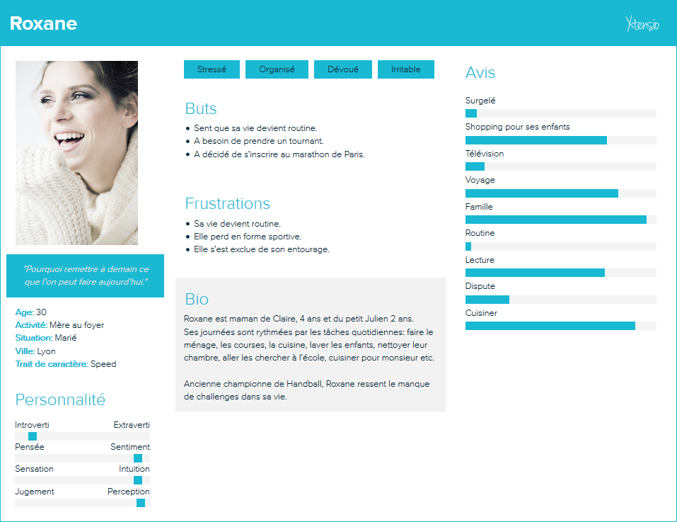

Scénario d'usage : Roxane
Voici le persona de Roxane ainsi que le scénario d'usage associé et le cas d'utilisation.
Persona

Scénario d'usage
Roxane fait le ménage. Elle regarde le tapis de marche qu'elle a acheté il y a 5 ans mais qu'elle n'a utilisé que 3 fois.
Quelle perte d'argent !
Si seulement mon mari voulait m'accompagner faire du sport mais il n'a pas de temps et puis il n'aime pas ça.
Et moi, je n'ose pas y aller seule, pourtant j'aimerais tester beaucoup d'activités mais je me mets des barrières parce que j'ai peur d'être ridicule et de ne pas y arriver.
Tous les jours, je vois sur mon téléphone des événements sportifs qui me font envies, mais je n'ose pas franchir le pas. Mon téléphone me propose, certes, plein d'activités cool, mais il ne me propose pas avec qui y aller !
Je rêve d'un ami avec qui je pourrais faire du sport ! Je rêve d'une application mobile qui pourrait me mêtre en relation avec quelqu'un pas trop loin de chez moi et avec un tempérament de meneur. Quelqu'un que je pourrais suivre afin de tester des nouveaux sports et repousser mes limites. Quelqu'un qui me redonnerait confiance en moi et à qui je pourrais partager ma motivation.
Si seulement je pouvais le trouver de manière simple avec mon téléphone...
Fonctionnalités visées par le scénario d'usage
- Chercher un Buddy
- Renseigner son objectif
- Renseigner des informations sur la personne recherchée (distance, tempérament)
- Discuter avec le Buddy
Cas d'utilisation
Je suis Roxane, j'ai 30 ans et je souhaite reprendre le sport.
J'ai parlé de ce souhait à une amie et elle m'a conseillée de télécharger BuddyFit. Je télécharge donc l'application mobile BuddyFit sur mon smartphone.
Après avoir effectué mon inscription sur la plateforme, je peux consulter la liste des événements sportifs de ma ville.
Deux semaines plus tard se déroule une course à Lyon qui est à 5 km de chez moi. Je décide de m'inscrire avec l'objectif de courrir tous les deux jours pour m'y préparer.
Néanmoins, une fois cette course passée, j'ai perdu toute motivation.
Les évenements sportifs que propose BuddyFit ne sont que des sports que je n'ai jamais testés, et je n'ose pas y aller seule.
C'est alors que je décide de tester une nouvelle fonctionnalité de BuddyFit : trouver un Buddy.
Je renseigne mon objectif à savoir : reprendre le sport. J'indique que je souhaite une personne à proximité (afin de pouvoir la rencontrer et m'entrainer avec).
Quelques jours plus tard, je reçois une notification de l'application. Un "Buddy" m'a été attribué. Je peux maintenant discuter avec Marc, 33 ans via l'application. Marc m'explique qu'il a accumulé quelques kilos ces dernières années et qu'il souhaite les perdre en se mettant au sport.
On s'est donc rencontré pour aller courir un matin. On a décidé de se revoir pour tester d'autres sports (vélo, escalade, badminton et même de la musculation).
Ma motivation s'est décuplée depuis que je fais du sport avec Marc.
Il est en de même pour lui. En effet, il a choisi de me partager le suivi de son poids, et je l'encourage au maximum à adopter un mode de vie sain.
Fonctionnalités visées par le cas d'utilisation
- Inscription au site
- Consulter les événements sportifs
- Chercher un Buddy
- Renseigner son objectif personnel
- Renseigner les informations sur la personne recherchée (distance)
- Discuter avec le Buddy
- Consulter le suivi poids de son Buddy
- Partager le suivi poids à son Buddy
- Suivre son poids
Subscribe to BuddyFit®
Get the latest posts delivered right to your inbox